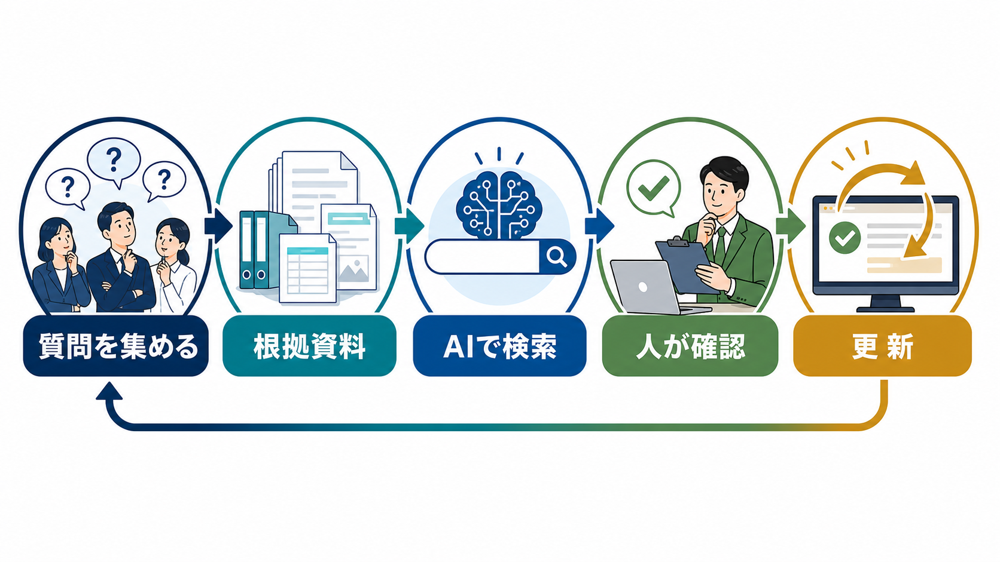

KNOWLEDGE / INTERNAL FAQ
社内FAQの作り方｜質問を集めてAIで更新し続ける方法
社内FAQは、質問と答えを並べるだけでは使われません。実際の問い合わせを集め、答えの根拠と更新者を決め、AIは検索や下書きの補助に置くと、現場の自己解決へつなげやすくなります。

社内FAQは、思いつきではなく問い合わせ履歴から始める
作成者が想像した質問だけを並べると、現場の言葉とずれます。メール、チャット、口頭で受けた質問を集め、同じ内容をまとめます。中小企業では、就業規則、経費精算、アカウント申請、営業資料の場所など、答えが既存資料にある質問から始めると設計しやすくなります。
| 質問の集め方 | 見るポイント | FAQ化の優先度 |
|---|---|---|
| メール・チャット | 同じ質問が何度も出るか | 高 |
| 担当者への聞き取り | 特定の人しか答えられないか | 高 |
| 検索ログ | 検索しても答えに届いていないか | 中 |
| アンケート | 言語化されていない困りごとか | 中 |
回答は「結論・条件・手順・問い合わせ先」で書く
FAQの回答は、長い規程の要約ではなく、読者が次に取る行動を示します。最初の一文で結論を答え、対象者や期限などの条件を置き、手順と例外、分からないときの問い合わせ先を続けます。根拠資料の名前と更新日も残します。
結論
まず何をすればよいかを書く。
条件
対象者、期限、例外を分ける。
根拠
規程・手順書・担当窓口へ戻す。
AIは質問の分類と回答候補の作成に使う
AIは、似た質問のグループ化、質問文の言い換え、既存資料からの回答候補作成に向きます。回答の正しさを確定する役割まで任せると、制度変更や例外条件を見落とします。社内FAQでは、根拠となる資料を提示できない回答は公開しない運用にします。
AIへ資料を渡す場合は、個人情報、契約情報、認証情報を含むか確認してください。入力範囲やサービス条件はAI導入のリスクと生成AIの社内利用ルールに照らします。
FAQの回答範囲は、部署と権限で分ける
全社員に見せる情報と、人事・経理・管理者だけが見る情報を同じFAQに置くと、検索の便利さが情報管理の弱点になります。公開範囲、閲覧権限、元資料の保管場所を決め、AIが回答してよい質問と担当者へ引き継ぐ質問を分類します。
| 分類 | 例 | 回答の扱い |
|---|---|---|
| 全社員向け | 勤怠、備品、一般的な申請手順 | FAQで回答 |
| 部署限定 | 営業資料、案件手順、採用運用 | 権限付きで回答 |
| 個別確認 | 給与、評価、個人情報を含む相談 | 担当者へエスカレーション |
| 回答禁止 | 認証情報、秘密情報、未承認の判断 | AIへ入力・回答させない |
未解決質問と古い回答を更新トリガーにする
FAQは公開後の利用状況で育てます。回答にたどり着けなかった質問、担当者へ戻った質問、同じ質問が再発した質問を集めます。制度やシステムが変わったときは、関連する回答をまとめて見直し、更新日と責任者を変えます。
- 利用者が検索する：質問文と近い言葉で探せるよう、表記ゆれを残す。
- 回答を読む：結論、条件、根拠、問い合わせ先を確認する。
- 解決できなければ戻す：担当部署と未解決理由を記録する。
- 更新する：回答、検索語、根拠資料、更新日を直す。
社内FAQの公開前チェック
FAQを増やす前に、1件の回答が安全に使えるかを確認します。件数ではなく、利用者が迷わず行動できることを優先します。
- 質問文が現場の言葉で書かれているか
- 回答の冒頭で結論が分かるか
- 対象者、期限、例外、問い合わせ先があるか
- 根拠資料と更新日が残っているか
- 権限外の情報が混ざっていないか
- IPA「AIの利活用、AIによるDXの推進」（2026-07-13確認）
- 経済産業省「AI事業者ガイドライン」（2026-07-13確認）
- 個人情報保護委員会「生成AIサービスの利用に関する注意喚起」（2026-07-13確認）
よくある質問
Excelで社内FAQを作ってもよいですか？
小さく始めるなら可能です。質問、回答、根拠資料、更新日、担当者、公開範囲を列で管理し、検索しやすい名前を付けます。利用者が増えたら権限と履歴を管理できる場所へ移します。
FAQの回答をAIに自動送信できますか？
社内の定型質問でも、制度変更や個別事情があるため、最初は回答候補の提示に留めます。根拠資料と更新日を確認し、個人情報や判断が必要な質問は担当者へ戻してください。
質問が少ない会社でもFAQは必要ですか？
質問が少なくても、特定の人だけが答えられる状態なら効果があります。まずは入社、経費、アカウント、顧客対応など、引き継ぎ時に困る質問を少数から整えます。